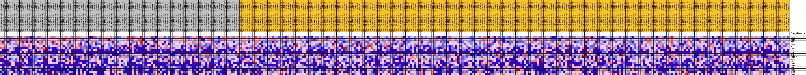
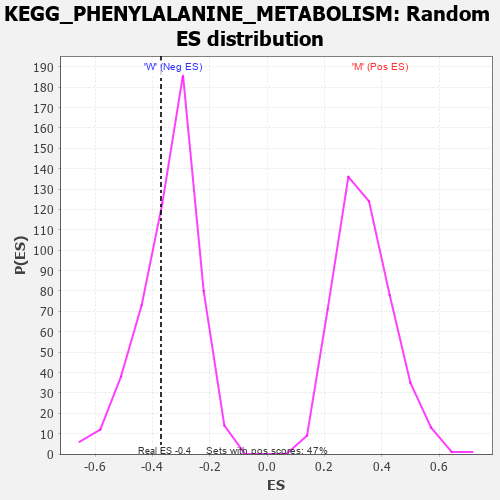

Profile of the Running ES Score & Positions of GeneSet Members on the Rank Ordered List
| Dataset | MUC16.MUC16.cls#M_versus_W.MUC16.cls#M_versus_W_repos |
| Phenotype | MUC16.cls#M_versus_W_repos |
| Upregulated in class | W |
| GeneSet | KEGG_PHENYLALANINE_METABOLISM |
| Enrichment Score (ES) | -0.36982927 |
| Normalized Enrichment Score (NES) | -1.0850987 |
| Nominal p-value | 0.31954888 |
| FDR q-value | 1.0 |
| FWER p-Value | 0.994 |
| PROBE | DESCRIPTION (from dataset) | GENE SYMBOL | GENE_TITLE | RANK IN GENE LIST | RANK METRIC SCORE | RUNNING ES | CORE ENRICHMENT | |
|---|---|---|---|---|---|---|---|---|
| 1 | GOT2 | na | 570 | 0.175 | 0.0815 | No | ||
| 2 | PRDX6 | na | 914 | 0.154 | 0.1562 | No | ||
| 3 | GOT1 | na | 2211 | 0.111 | 0.1913 | No | ||
| 4 | NAA80 | na | 4920 | 0.070 | 0.1792 | No | ||
| 5 | AOC2 | na | 6400 | 0.055 | 0.1811 | No | ||
| 6 | IL4I1 | na | 8283 | 0.039 | 0.1674 | No | ||
| 7 | TAT | na | 8755 | 0.035 | 0.1772 | No | ||
| 8 | PAH | na | 20232 | -0.026 | -0.0168 | No | ||
| 9 | MIF | na | 20527 | -0.028 | -0.0077 | No | ||
| 10 | ALDH3B1 | na | 21560 | -0.032 | -0.0094 | No | ||
| 11 | MAOA | na | 26995 | -0.054 | -0.0796 | No | ||
| 12 | DDC | na | 40044 | -0.096 | -0.2655 | No | ||
| 13 | ALDH3A1 | na | 40324 | -0.097 | -0.2198 | No | ||
| 14 | ALDH3B2 | na | 48614 | -0.131 | -0.3011 | Yes | ||
| 15 | HPD | na | 49883 | -0.139 | -0.2510 | Yes | ||
| 16 | AOC3 | na | 54293 | -0.200 | -0.2257 | Yes | ||
| 17 | MAOB | na | 54862 | -0.227 | -0.1166 | Yes | ||
| 18 | ALDH1A3 | na | 54987 | -0.236 | 0.0051 | Yes |

